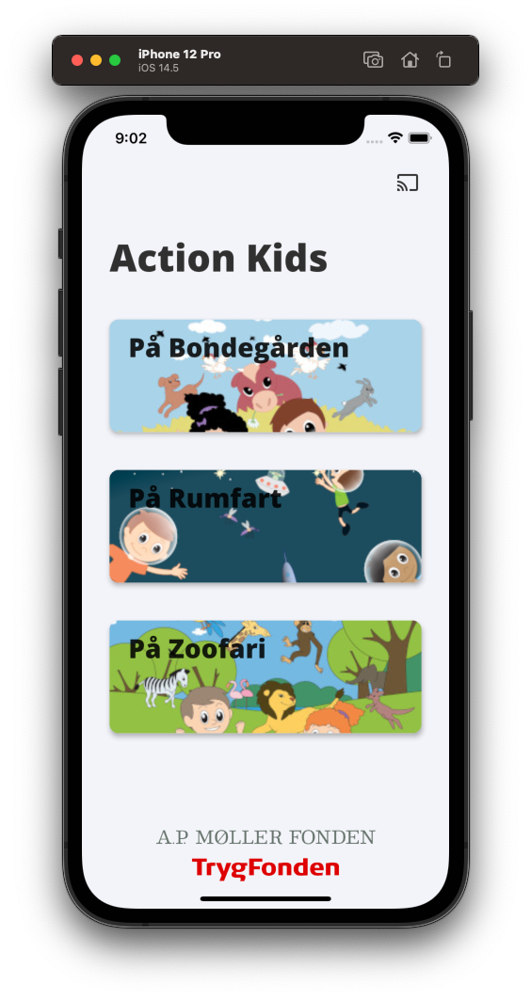
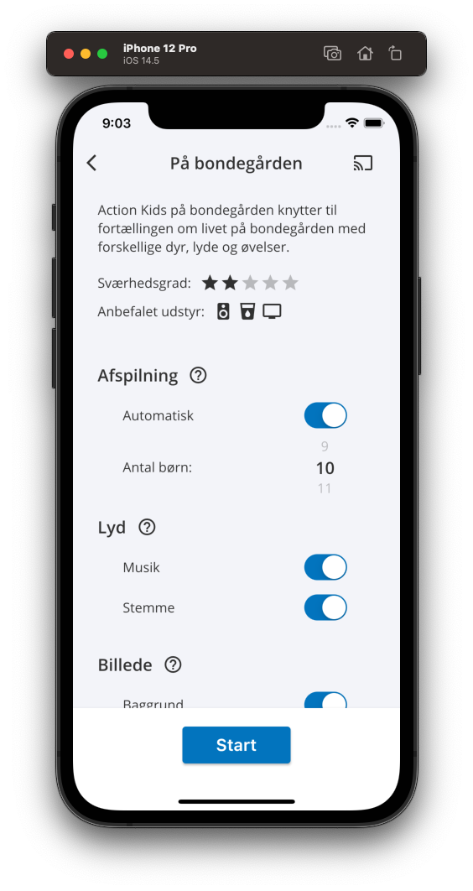
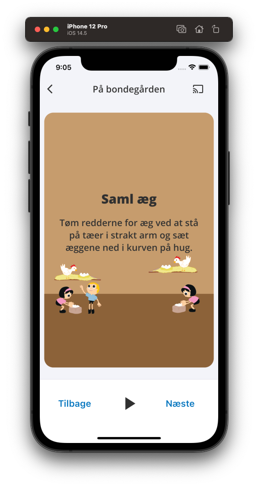

Action Kids: App Development
How can we digitalise an analog concept aimed at activating preschoolers?
Grade: A, Methods: Observation, Interviewing, Affinity Diagram, Crazy 8's, NAF, Wireframing, Coding, Usability testing
This project sought to design and test a digital version of the Action Kids product. Action Kids is a product used in kindergartens to motivate kids to exercise through carefully constructed programmes.



Images from the second iteration